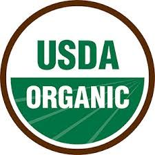
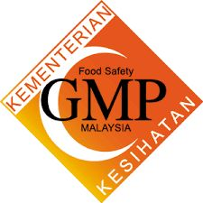
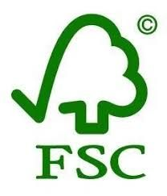
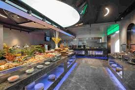

Our Transparent Supply Chain
Ingredient Sources & Quality
We source ingredients locally whenever possible, with special imports only when necessary for quality.
High Quality Proteins
- Chicken: Local free-range farms ($3.50/lb)
- Beef: Grass-fed, Alberta, Canada ($6.80/lb)
- Salmon: Sustainable Norwegian farms ($9.20/lb)
- Tofu: Organic, California ($2.30/lb)
Fresh Produce
- Leafy Greens: Local hydroponic farms ($1.20/lb)
- Vegetables: Regional organic farms ($0.80-$2.50/lb)
- Fruits: Seasonal local sources
- Grains: Organic whole grains ($0.60/lb)
Quality Certifications

USDA Organic Certified

Food Safety Certified

Sustainable Sourcing
Our State-of-the-Art Central Kitchen

All meals are prepared in our state-of-the-art central kitchen that meets the highest food safety standards. We use minimal processing and no artificial additives to preserve nutritional value and taste.